Red
Passion / Emotion
- HEX
- #EF3442
- RGB
- 239 52 66
- CMYK*
- 0 78 72 0
Left end; the energy of the human, observable world.
Skeptium brand guidelines · version 1.0
Skeptium is a fictional 119th element — a symbol for critical thinking, curiosity and the pursuit of better questions. This book is the single reference for how the brand looks, speaks and behaves: in full colour, in radical monochrome and inside the product.
Skeptium — Where ideas meet evidence.
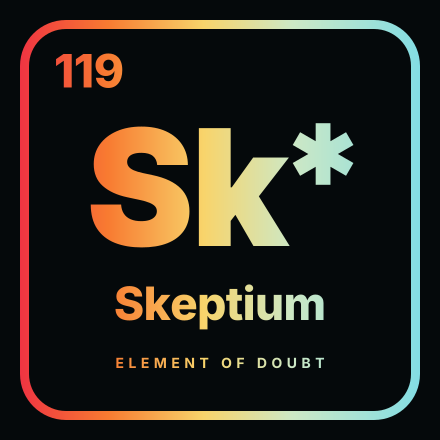
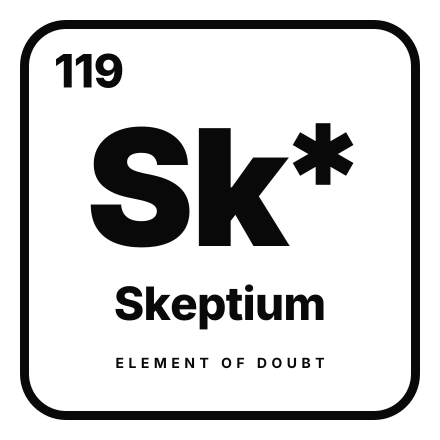
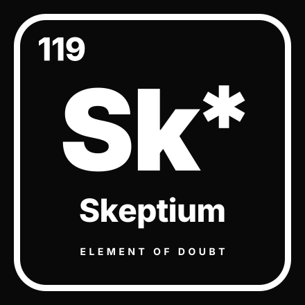
An imagined element of critical thinking: an instrument for asking better questions, examining claims, comparing interpretations and testing ideas against evidence.
Skeptium takes the shape of a tile from the periodic table. Its symbol is Sk*, its number is 119 — one higher than the highest officially recognised element (118) when the brand was created. It is the next element beyond what is currently established: the place where what we think is examined against what we know.
Skeptium is a fictional brand metaphor. It is not a real chemical element and not an IUPAC symbol, and nothing we publish should suggest otherwise.
Start from the question, not from the answer.
Compare interpretations; follow the evidence.
Every statement may need more context.
The logo is an element tile: a rounded square frame, the number 119 at top left, the oversized Sk* and the wordmark beneath. Both colour systems carry two master lockups — with and without the tagline. The no-tagline version is an independently balanced layout, never a crop of the full one.
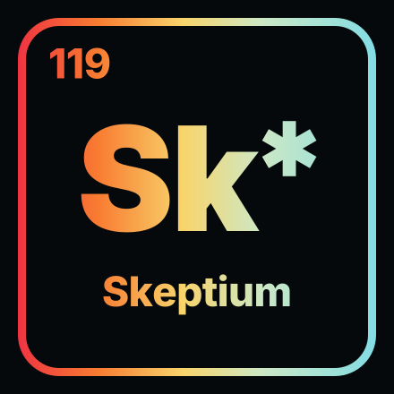
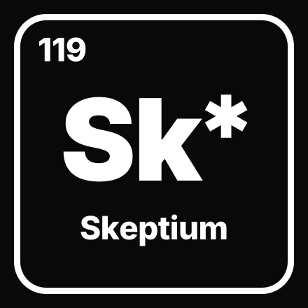
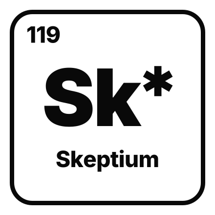
Inside the product the tile shrinks to a 26 px mark next to the wordmark, which carries the asterisk as a raised footnote: Skeptium*. At this size the 119 is left out. The mark and the word follow the theme: spectrum on dark, solid #111317 on light, solid white in monochrome.
As the space shrinks, remove lower-priority parts before the asterisk ever loses legibility.
Construction guides are for this book only — they never ship in a logo file.
| Element | Docs starting point | Production files | Weight |
|---|---|---|---|
| Frame stroke | 7 | 9 | — |
| Corner radius | 36 | 46 | — |
| Inset / padding | 29 | 34 | — |
| 119 | ~44 | 46 | Extra Bold 800 |
| Sk | ~170 | 162 | Black 900 |
| Asterisk (diameter) | ~75 | 62 (0.38 × Sk) | bars 24% of diameter |
| Skeptium | ~43 | 46 | Extra Bold 800 |
| ELEMENT OF DOUBT | ~12, tracking 0.2–0.3em | 14, tracking 0.32em | Bold 700 |
| Lockup | Screen | Below that | |
|---|---|---|---|
| Primary (with tagline) | 200 px wide | 60 mm | use the secondary logo |
| Secondary (no tagline) | 96 px | 25 mm | use the icon |
| Icon (frame + Sk*) | 24 px | 8 mm | use Sk* alone |
| Product wordmark (tile + Skeptium*) | tile 20 px, word 16 px | — | tile alone |
Sizes are recommendations derived from the rule “remove rather than reduce below legibility”; the tagline must never fall under ~7 px.
The asterisk is Skeptium's radical — a symbol of inquiry, openness and the multiplication of perspectives. It marks the active question: a prompt to examine, compare and test commonly accepted views.
It works as a footnote, a caveat, a sign that context exists beyond what is stated — and, alone, as an icon. It is not a sparkle suggesting automatic AI magic.
The square represents a “box” — the commonly accepted view, a prevailing narrative or a reference framework that we examine and compare against new evidence.
Its rounded corners are intentional: even within an apparent box, knowledge is not absolute. Certainty has boundaries, and what seems fixed can change with better evidence.
Skeptium checks what is inside the frame and questions the frame itself when necessary. The frame is not a sign that any prevailing view is automatically false. Keep the interior open: the frame surrounds the statement without choking it.
Five colours, always in this order, always together. The spectrum belongs to the letters and the frame of the mark, to short display headings and to select accents — on a neutral near-black stage.
Passion / Emotion
Left end; the energy of the human, observable world.
Energy / Fire
Transition from perception to exploration.
Illumination / Insight
The turning point; ideas connect with evidence.
Renewal / Balance
Nuance, openness, transition to reflection.
Openness / Perspective
Right end; abstraction, possibility, broader perspective.
* CMYK values are the approximations printed on the reference board, not a colour-managed specification. For print, convert the HEX/sRGB values with the chosen ICC profile, proof, and record the press-specific CMYK separately.
90deg); five stops, in order, never reversed or truncated.--sk-gradient: linear-gradient(90deg,
#EF3442 0%, #F87B31 22%,
#F8D46B 46%, #CDE8C5 68%,
#83DDE4 100%);The neutrals are implementation recommendations, not values printed on the board.
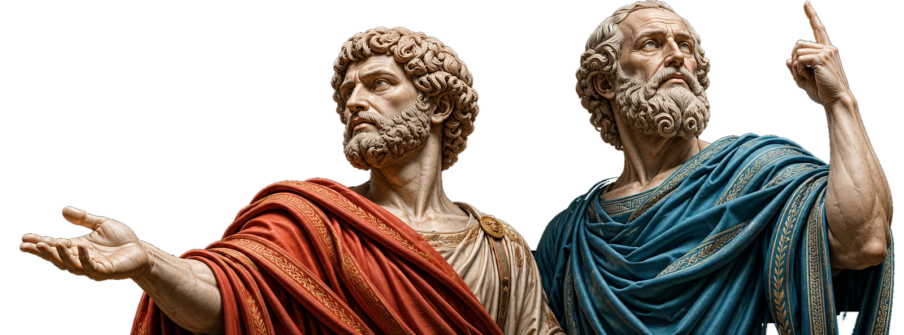
The Skeptium colour palette is inspired by the enduring dialogue between Aristotle and Plato — two foundational perspectives in Western thought. Skeptium's gradient unites these complementary traditions, from tangible experience to abstract understanding, to represent a balanced approach to knowledge: questioning, connecting, and testing ideas against reality.
This pairing is Skeptium's own creative mapping, not a classical colour code; Aristotle is not “only science” and Plato not “only spirit”. The gradient is a journey from first perception to fuller reflection — never from “wrong” to “right”, from “emotional” to “intelligent”, or from “false” to “true”. Historical symbolism belongs to the colour system only.
Monochrome is a deliberate identity, not a desaturated copy of the spectrum logo. It speaks through contrast and balance, without colour and without the philosophers.
Depth / Focus
Brand canvas, dark app icon.
Context / Structure
Dividers, diagrams, grey surfaces.
Inquiry / Nuance
Editorial midtone.
Evidence / Clarity
Light end of grey treatments.
Knowledge / Result
Glyphs, borders, text.
Primary
Pure black against pure white, maximum legibility. Precision, direct questioning, the clarity of a well-supported conclusion — the discipline of investigation, not a claim that every question is binary. The master logo is always white on black or black on white, never a mid-grey mark.
Secondary · expressive
A continuous dark-to-light range: an editorial metaphor for uncertainty, nuance and the journey of inquiry. For supporting illustrations and controlled contexts — not a replacement for crisp logo text, not a truth label and not an uncertainty metric.
“Established” means best supported by evidence so far — not eternal truth. A revision can move understanding back into inquiry. Black is not “false”, white is not “infallibly true”.
Inter
Aa Bb Cc 0123456789 * — “ ”
A modern neo-grotesk, highly legible, with a heavy end for the mark. The reference artwork does not identify a font; Inter is the production choice, with system-ui as fallback.
| Role | Setting |
|---|---|
| Element symbol Sk* | 800–900, compact spacing, careful kerning |
| Wordmark Skeptium | 700–800, tracking −0.02em; substantial but subordinate to Sk* |
| Tagline | ALL CAPS, small, wide tracking 0.2–0.32em; remove rather than shrink below legibility |
| Editorial titles | Bold, clean, concise, sentence case |
| Section headings | UPPERCASE, medium/bold, separated by fine horizontal rules |
| Body | 400, 15–17 px, line-height ~1.55, solid high-contrast neutrals — never gradient text |
Never
Reusing the brand gradient to rate claims turns a metaphor of inquiry into a verdict — and makes red “wrong” and cyan “right”, which the brand explicitly rejects.
Always
Verdicts use their own semantic colours, always paired with a written label (and shape where it helps). Never by hue alone, never with brand-spectrum colours.
Between what we think and what we know.
Where ideas meet evidence.
ELEMENT OF DOUBT
CURIOSITY / REASON / BETTER QUESTIONS
The sources we found contradict this claim.
This is a lie.
Partly supported: the figure is right, the trend is not.
Busted!
Skeptium helps you test claims against evidence.
Skeptium always finds the truth.
The site offers three themes (Settings → Theme). Each is a direct application of one part of this book; the verdict colours keep their meaning in all three.
styles.css (--brand-spectrum, --brand-mark, --nobs-*), switched by <html data-theme>.The source artwork behind this book. The boards are references for composition and editorial style; where they differ from the rules above, the rules win (see Known inconsistencies).
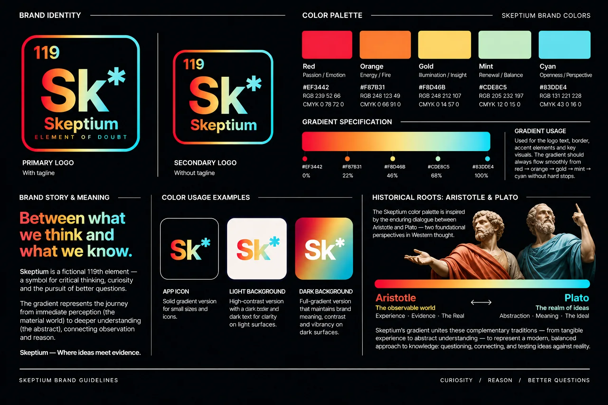
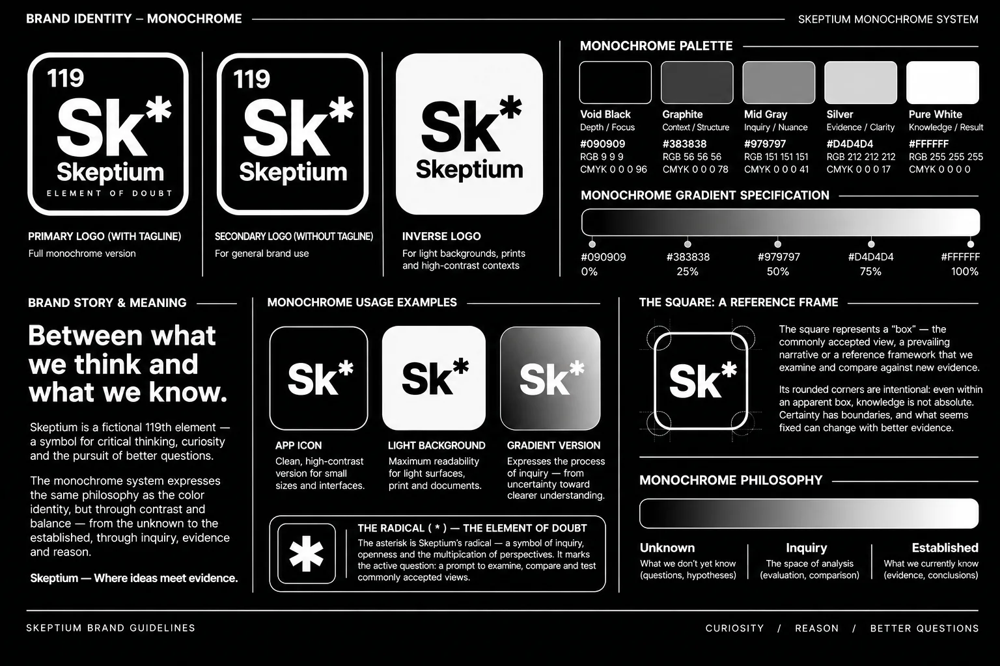
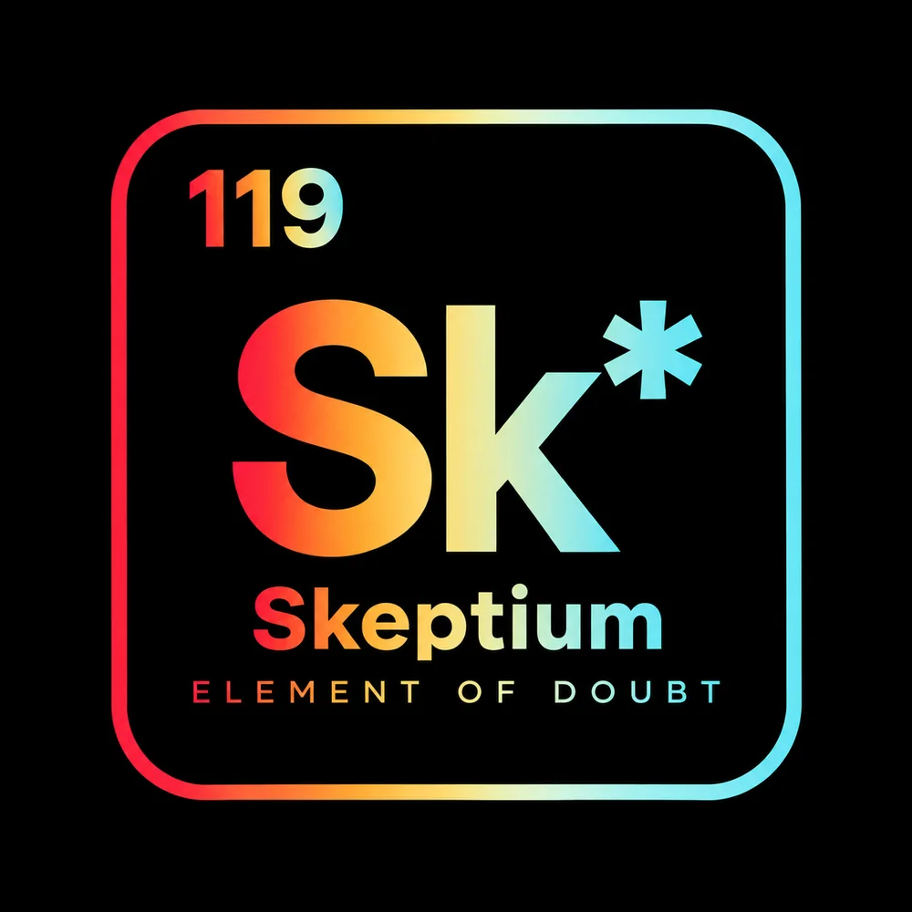
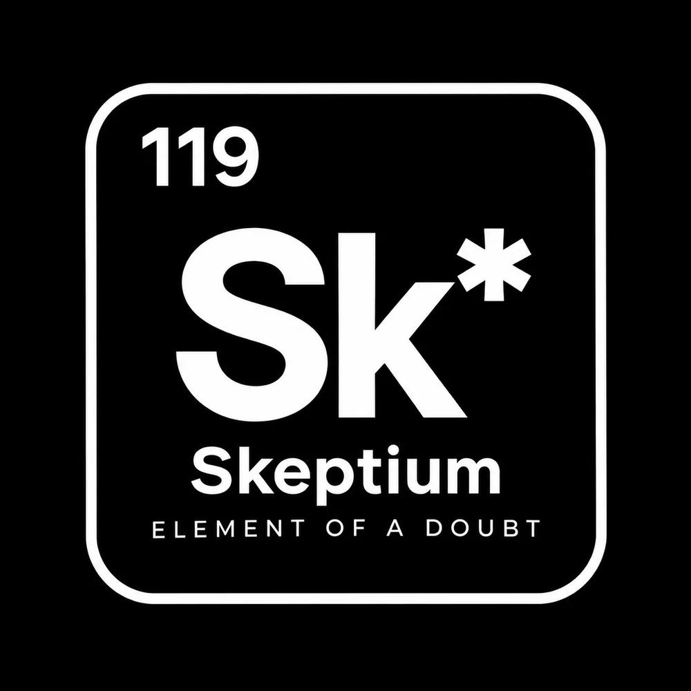
Vector SVG is the source of truth for every mark; PNGs are 1320 px renders of the same files.
Reference artwork: colour board ·
monochrome board ·
gradient emblem ·
element tile. Written specifications:
docs/brand/ in the repository (master, colour and monochrome systems).